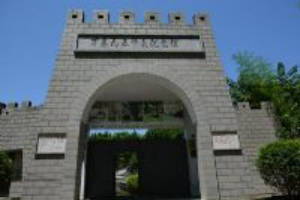

万州大瀑布群景区宽151米，高64.5米，瀑布面积达9739.5平方米，是重庆市级风景名胜区。它位于万州区境内，距城区30公里，景区面积60.13平方公里。万州大瀑布群景区山青、水秀、瀑宽、洞奇、潭幽、湖大、虹美。瀑布下面1600平方米的水帘洞能极大丰富您的想象力。7000余平方米的青龙洞中，叹为观止的是自然天成的青龙洞“天工画壁”。万州大瀑布群景区名闻暇迩、饮誉中外的“亚洲第一瀑”——万州大瀑布……
三峡平湖旅游区（LakeCityTourismAreaoftheThreeGorges）整体介绍：高峡出平湖，平湖在万州。万州历史文化悠久，地理位置独特，山川风物奇丽，水陆空铁交通便利，是大三峡旅游的集散中心和重要目的地。万州城依水而生，靠水而兴，临水而发，形成了“城在山中、水在城中、人在山水中”的独特城市风貌，三峡平湖旅游区被中央电视台评为新三峡“十大旅游新景观”之一，是典型的山水相依、湖城相融……
 重庆三峡移民纪念馆是全国唯一为镌刻三峡工程及百万大移民这一重大历史事件，弘扬三峡移民精神，展现移民文化而建立的综合性纪念馆。重庆三峡移民纪念馆（ChongqingThreeGorgesimmigrationMemorial），位于重庆市万州区南滨路1561号，是纪念三峡百万大移民而修建的专题性纪念馆，三峡库区历史文化和移民文化收藏、保护研究和展示中心。重庆三峡移民纪念馆建设用地50亩，主体建筑面积……
重庆三峡移民纪念馆是全国唯一为镌刻三峡工程及百万大移民这一重大历史事件，弘扬三峡移民精神，展现移民文化而建立的综合性纪念馆。重庆三峡移民纪念馆（ChongqingThreeGorgesimmigrationMemorial），位于重庆市万州区南滨路1561号，是纪念三峡百万大移民而修建的专题性纪念馆，三峡库区历史文化和移民文化收藏、保护研究和展示中心。重庆三峡移民纪念馆建设用地50亩，主体建筑面积……悦君山寨堡文化景区位于分水镇境内，总面积15万亩，其中森林面积6万亩，田垅果树经济林木9万余亩，主峰马鬃岭，海拔1373米，适宜四季游玩，尤其是夏季纳凉休闲和冬季赏雪观景的极佳地。景区历史遗迹丰富、文化积淀厚重，有栈道、碉楼寨堡等古遗迹和多个自然景点；建有狩猎场、休闲长廊、观光亭，集餐饮、娱乐、休闲、观光、住宿为一体，度假村建筑面积3100余平方米，可同时接纳500余名游客食宿与娱乐；能提供多种农……
同鑫蔬菜大观园位于重庆市万州区甘宁镇永胜村，占地面积1127亩，开发建设面积40余万平方米，是一个以蔬菜水果为主题的生态旅游观光园，属重庆市级现代农业示范园、重庆市乡村旅游示范点、国家三A级风景区、万州区科普教育基地，目前已完成农业生产、旅游观光、休闲体验、科普教育的综合开发。科学技术与农业高度融合。该园依托现代化科学技术，采用先进的设施、设备，综合运用通讯技术、信息技术、物联网技术，打造精准农业……
潭獐峡位于重庆市万州区东南部，属石灰岩构成的峡谷型风景区，总面积69平方公里，其中森林面积为32100亩的，森林覆盖率达64.7%，与拥有珍稀动植物和三峡库区“昆虫王国”的市级自然保护区王二包浑然一体。峡中水势随季节而变化，以夏季为最。部分峡段可荡舟娱乐。峡中水质清澈，无污染，峡水每碰山壁，变成一潭，峡中有48潭，每个水潭都是一个天然的游泳池。潭獐峡主峡长约21公里由将军峡、天王峡、桃园峡、地缝峡……
万州西山公园位于万州旧城区西南端，其北大门与万忠路相切，北大门以东地段与万州人民医院南部围墙衔接，公园东北角坡地与果园路相接，万州公园东部紧邻长江边的滨江大道和新建的万州区体育馆，公园西部静园及职工住宅与万忠路公路以南城市商住楼小区邻接。西山公园园内古木参天，浓荫密被，古树名木繁多，是我国都市园林中的森林植被和古树名木保存完好的自然山水名园。据调查资料表明，该园内共有各种观赏花木95科、160属、……
万州西游洞旅游景区属国家AAA级景区，位于万州区新田镇盐井社区，距万州城区约28公里。 景区群山环抱，小桥流水。西游洞洞口于古树掩映下，洞纵深数十公里，大滩小滩，深滩险滩，滩连滩；大洞小洞，奇洞怪洞，洞套洞；洞内暗河涌流；钟乳嶙峋；石笋、石帘、石梯田形态万千，巧布其中。洞内著名景观“定海神针”高近30米。万州西游洞景区洞内群山环抱，小桥流水。现已有普通宾馆、会议室、划船、盐井沟化石图片博物馆，集……
万县“九五”惨案纪念馆（以下简称纪念馆）由中共中央办公厅批准建立,是重庆万州唯一由中央批准兴建的纪念建筑物，国务院前副总理、国防部部长张爱萍将军题写馆名，创建人刘书金。“九五”惨案震惊中外，列世界第一案。1926年9月5日，英国帝国主义在未同中国公开宣战的前提下，悍然动用三艘军舰炮轰万县城，两个小时的野蛮炮轰，一共炸死5000中国人，即平均每1.44秒-一人，惨绝人寰，创世界之最。纪念馆：一本永远……
重庆万州北山弥陀禅院始建于明朝中叶，原名中淮寺，钟鼓楼弥陀禅院等，地处万州区一马路东端。是三峡乃至西南地区久负盛名的佛教寺庙。钟鼓楼弥陀禅院原位于万州城区一马路东端，屹立于长江之滨，清乾隆年间兴建，光绪十六年（1890）复修，传说夜门神钟飞降至庙，遂冠名“钟鼓楼”。钟鼓楼禅院雄居江岸，飞檐翘角，气势恢宏，俗语赞曰：“万州有个钟鼓楼、半截伸在天里头”。盛时，寺院有大僧300余众，晨钟暮鼓，经声朗朗，……
介绍盐井沟龙洞古名石龙洞，距万州城区20公里，洞内暗河涌流，钟乳嶙峋。石笋、石帘、石梯田形态万千，巧布其中。洞中泉水每日有规律的涨落，终年不涸，故又称龙泉洞。现仍存有清光绪皇帝御笔亲书的“功宣朐忍”匾额。
重庆万州区……
铁峰山国家森林公园（大垭口森林公园）距万州主城区15公里，海拔最高为1308米，面积3.5万亩。公园内山势绵延，陡岩深壑，奇峰耸翠，林木繁茂。树种以马尾松、水杉、湿地松、火炬松、雪松、斑竹、荆竹等为主。茂密的森林，又是野生动物栖息的天然场所，鸟啭鹤鸣，给游人增添无穷乐趣！森林公园总面积9100公顷，森林覆盖率95%，园内森林茂密，动植物资源丰富，有森林植物869种，森林动物500多种，是丰富的动植……
水力发电具有效率高、成本低，有利于环境保护和水资源综合利用等优点。1878年法国建成了世界上第一座水力发电站。十年后，也就是1888年，台湾巡抚刘铭传筹划在台湾淡水河支流新店溪建设龟山水电站，至1905年建成发电，装机容量500千瓦。这是我国最早的水电站。我国大陆第一座水电站是1912年在云南滇池地区建成的石龙坝水电站。四川是我国水能资源十分丰富而且开发较早的省份之一，境内河流很多，水电建设先是从……
万州港地处长江中上游结合部，三峡库区腹心地带，素有“渝东门户”之称，重庆直辖后为渝东和三峡库区最大的港口。港辖区上起忠县羊渡溪下至巫山鳊鱼溪，东距宜昌321公里，西距重庆327公里，自然岸线301公里。港口现有区域面积27.01平方公里，其中陆域0.44平方公里，水域26.57平方公里。万州港下辖忠县、西沱（含石宝寨）、云阳、奉节、巫山等五个县级港站。港口地理位置适中，可与长江流域水运网地区进行直……
万州区博物馆前身系四川省万县地区博物馆，座落在万州区中心地段，馆址滨临长江，与西山公园相邻，环境优雅、交通方便，是一座以收藏、研究、展示三峡历史文物、民风民俗为宗旨的地方性综合博物馆。自一九八八年建成开馆以来，立足三峡，先后举办过“万县地区文物精品展”、“梁平民间工艺美术展”等展览，现馆内基本陈列为“川东古墓葬”、“流水年华记忆万州”、“盐井古象展”三个展览，展览内容具有浓郁的地方特色，全面反映了……
新乡墓群位于万州区新乡镇万顺村，时代为汉—六朝。含万顺、晒网坝、李家嘴、上河坝、小沱基、包上、银家嘴等7个墓地。2019年，新乡墓群被重庆市人民政府公布为第三批重庆市文物保护单位。……
时代：新石器时代至汉类型：古遗址地区：重庆市万州区批次：第一批上中坝遗址位于万州区小周镇涂家村一组，分布在东西长200米、南北最大宽80米的台地上，分布面积12000平方米。三峡文物保护抢救期间，西北大学考古队在此发掘，清理明清时期墓葬7座、清代灰坎2个、清代沟1条，并出土大量的石器、瓷器、陶器，属B级发掘项目。此遗址对于了解三峡地区古代文化具有一定的……
吴体珂烈士墓位于万州区郭村镇向泥村4组。吴体珂（1915—1934），又名吴成元，万县龙沙乡大地村（今万州区郭村镇）人。1928年，吴体珂在四川省立第四师范学校读书时，参加共青团，1929年秋转为中-员，后任省四师党支部书记，与其他同志一道积极组织开展革命活动。1931年2月，因叛徒出卖被驻万军阀王陵基逮捕，他不畏酷刑，拒不承认共产党员身份，被敌人押至重庆……
.png)